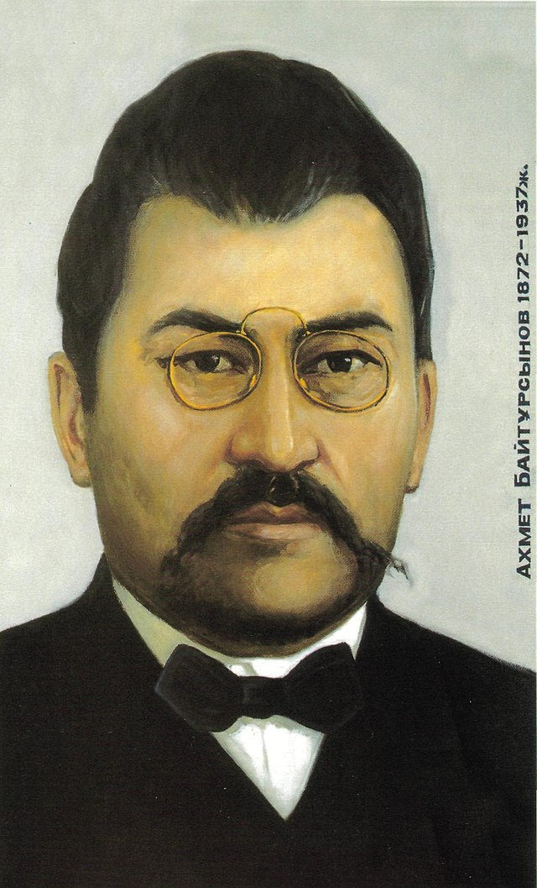
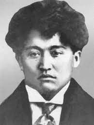

Алаш партиясы — Ресей империясы мен Социалисттік Ресейдің қазақ партиясы болған. Партия Бірінші дүниежүзілік соғыс тұсындағы бейберекетсіздік, 1916 жылы қазақтардың тыл жұмысына шақырылуы, 1917 жылы Уақытша үкіметтің құрылуы мен басқа да күрделі мәселелер, ұлт зиялыларының алдына өркениет көшінен тыс қалмауға бағытталған шұғыл шараларды жүзеге асыруды қойған болатын. Олар осы талаптар үдесінен шығу үшін ұлт зиялыларының басын қосып, ұйым құрып, күш біріктіруге деген қажеттілігін туындатты.
Әлихан Бөкейханов
Ахмет Байтұрсынұлы
Мағжан Жұмабаев